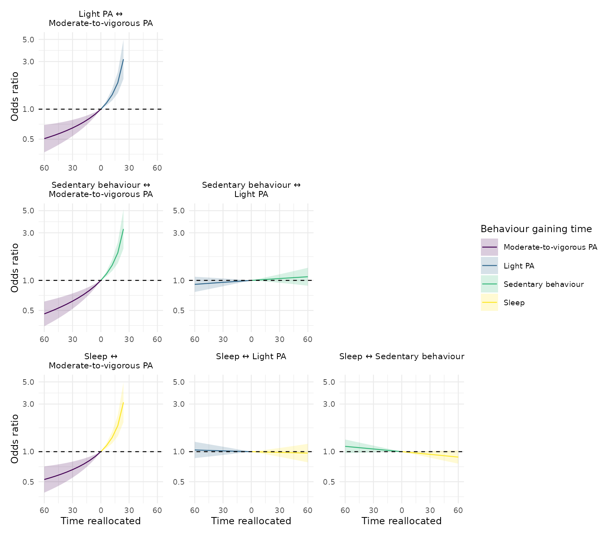
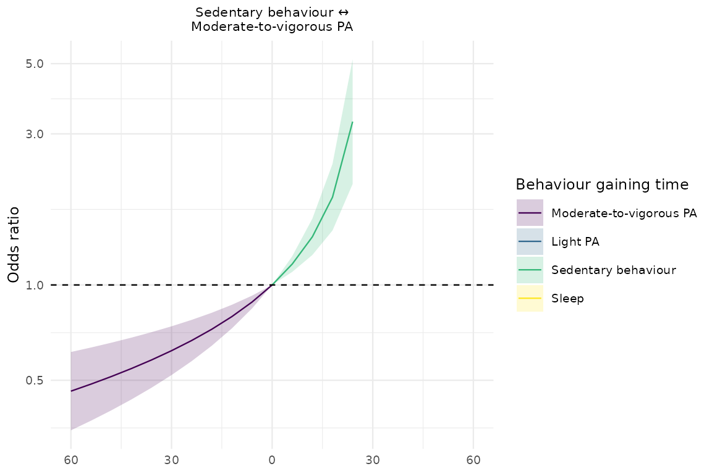
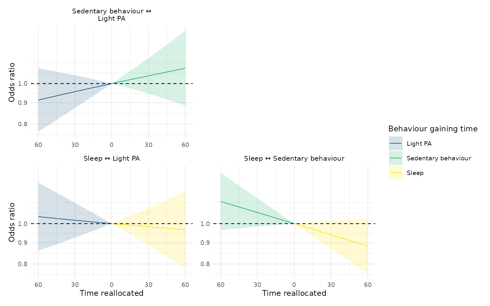
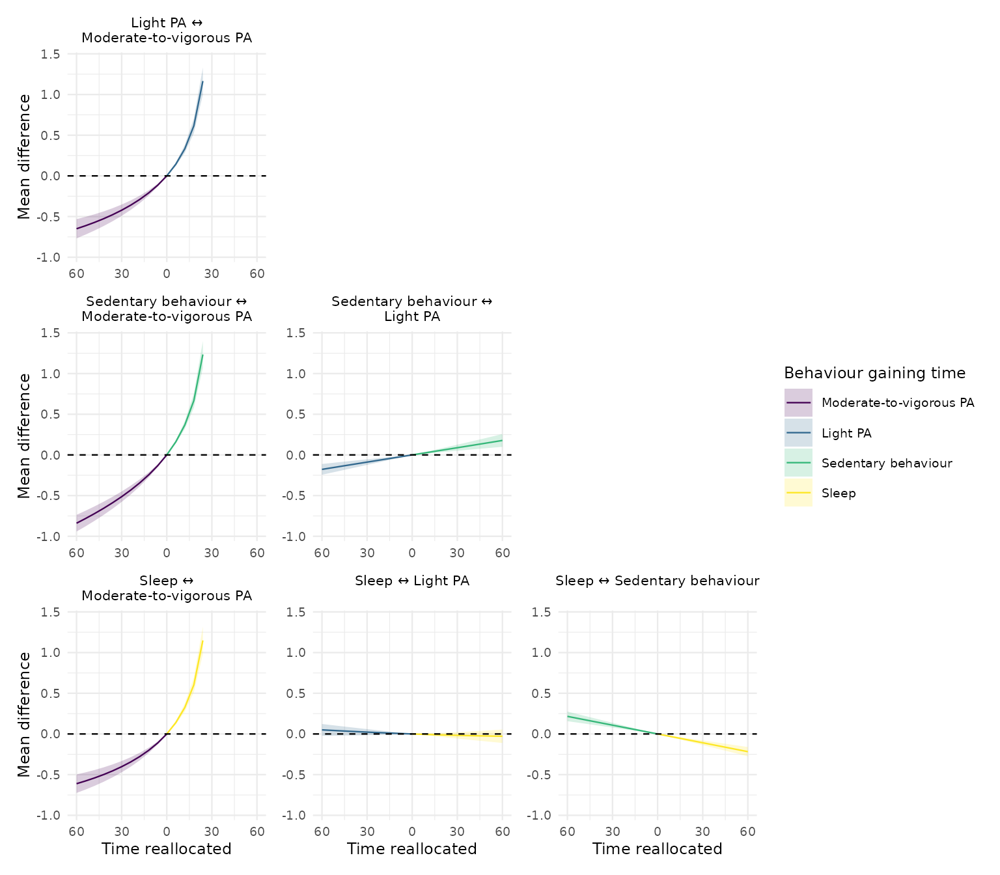
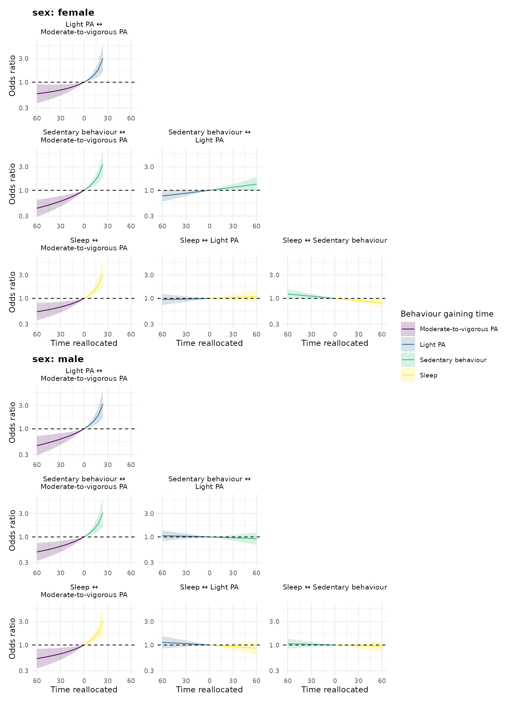

Predicting time reallocations
Source:vignettes/predicting-reallocations.Rmd
predicting-reallocations.RmdPivot ILR slopes from comp_iv() are hard to interpret
directly in minutes. Compositional isotemporal substitution solves this
by comparing two whole days: a reference composition and the same day
with delta minutes shifted from one behaviour to another
while holding the remaining behaviours fixed (Dumuid, Stanford, Pedišić,
et al., 2018; Dumuid et al., 2019; Dumuid et al., 2020). Because these
estimates come from observational regression models, they compare
expected outcomes across different compositions rather than causal
within-person changes.
We start by fitting a linear model for zbmi and a
logistic model for obesity on timeuse:
library(timecoda)
cd <- declare_composition(
data = timeuse,
parts = c("MVPA", "LPA", "SB", "SPT"),
closure = 1440,
labels = c(
MVPA = "Moderate-to-vigorous PA",
LPA = "Light PA",
SB = "Sedentary behaviour",
SPT = "Sleep"
)
)
fit_bmi <- comp_iv(comp = cd, outcome = "zbmi", model = "lm")
fit_ob <- comp_iv(comp = cd, outcome = "obesity", model = "glm",
family = "binomial")Pairwise reallocations
To estimate how obesity odds differ when 10, 20, or 30 minutes move
from sedentary behaviour (from = "SB") to
moderate-to-vigorous activity (to = "MVPA"), pass the fit
to predict_realloc():
r <- predict_realloc(
object = fit_ob,
from = "SB",
to = "MVPA",
delta = c(10, 20, 30)
)
summary(object = r)
#> Time-reallocation effects: Odds ratio versus the reference composition
#> 3 reallocations of 10, 20, 30; 95% confidence intervals
#>
#> # A tibble: 3 × 9
#> to from to_label from_label delta estimate conf.low conf.high p.value
#> <chr> <chr> <chr> <chr> <dbl> <dbl> <dbl> <dbl> <dbl>
#> 1 MVPA SB Moderate-to-… Sedentary… 10 0.822 0.764 0.884 1.51e-7
#> 2 MVPA SB Moderate-to-… Sedentary… 20 0.704 0.618 0.802 1.36e-7
#> 3 MVPA SB Moderate-to-… Sedentary… 30 0.620 0.519 0.740 1.25e-7Moving 10 minutes from SB to MVPA is
associated with roughly 18% lower odds of obesity (OR = 0.822) relative
to the reference day, and each additional 10 minutes brings a smaller
multiplicative drop because the model operates on log-ratios. Note that
per-row p-values are unadjusted for multiple testing.
By default, every reallocation is anchored at the sample’s closed geometric mean, which is printed with the fit:
print(x = fit_ob)
#> <timecoda_fit> compositional generalized linear model (binomial)
#> Parts: MVPA, LPA, SB, SPT (total = 1440)
#> Reference composition: MVPA = 28.1, LPA = 235.5, SB = 677.2, SPT = 499.2
#>
#>
#> Call: stats::glm(formula = obesity ~ ilr1 + ilr2 + ilr3, family = "binomial",
#> data = data)
#>
#> Coefficients:
#> (Intercept) ilr1 ilr2 ilr3
#> -3.0796 -0.6916 -0.2635 0.9014
#>
#> Degrees of Freedom: 299 Total (i.e. Null); 296 Residual
#> Null Deviance: 355.8
#> Residual Deviance: 322 AIC: 330Here, the reference day contains only 28.1 minutes of
MVPA, which sets an upper bound on how many minutes can be
taken out of MVPA. Behind the scenes,
predict_realloc() builds each reallocated day, transforms
both compositions into the fit’s ILR basis on an emmeans
reference grid, and contrasts them on the link scale before
back-transforming:
![Flowchart of the predict_realloc() pipeline: take the reference composition stored in the fit, build each reallocated composition by moving delta minutes from one part to another, check that every part stays positive with an invalid transfer handled by on_invalid, express every composition in ILR coordinates on an emmeans reference grid with covariates averaged, contrast each reallocated composition against the reference on the link scale or, when type is absolute, predict the response at each composition, back-transform to the model's effect measure, and return a realloc tibble read by summary(), pub_ready() and plot_realloc().](realloc-pipeline.svg)
Asymmetry, reversals, and invalid transfers
Reversing the transfer—moving time out of MVPA into
SB—shows the classic asymmetry of compositional
substitution (Dumuid, Stanford, Pedišić, et al., 2018; Dumuid et al.,
2020):
predict_realloc(object = fit_ob, from = "MVPA", to = "SB", delta = c(10, 20, 30))
#> # A tibble: 3 × 10
#> from to delta estimate std.error df conf.low conf.high statistic
#> <chr> <chr> <dbl> <dbl> <dbl> <dbl> <dbl> <dbl> <dbl>
#> 1 MVPA SB 10 1.32 0.0705 Inf 1.19 1.47 5.20
#> 2 MVPA SB 20 2.17 0.325 Inf 1.61 2.91 5.16
#> 3 MVPA SB 30 NA NA NA NA NA NA
#> # ℹ 1 more variable: p.value <dbl>Moving 10 minutes out of MVPA gives an odds ratio of
1.32—larger than the reciprocal of 0.822 (\approx 1.22)—because subtracting 10 minutes
from 28.1 is a much larger relative change than adding 10. (Passing
negative values to delta with the original
from and to produces the same reversed
estimates.)
In that table, the 30-minute row returns NA because
subtracting 30 minutes from 28.1 drives MVPA below zero. By
default (on_invalid = "na"), invalid transfers stay in the
output as missing rows so multi-step sweeps do not fail midway. You can
drop them instead with on_invalid = "omit", or halt
immediately with on_invalid = "error":
predict_realloc(object = fit_ob, from = "MVPA", to = "SB", delta = c(15, 60),
on_invalid = "omit")
#> # A tibble: 1 × 10
#> from to delta estimate std.error df conf.low conf.high statistic
#> <chr> <chr> <dbl> <dbl> <dbl> <dbl> <dbl> <dbl> <dbl>
#> 1 MVPA SB 15 1.61 0.149 Inf 1.35 1.93 5.18
#> # ℹ 1 more variable: p.value <dbl>Transfers that leave a part strictly positive but very close to zero pass this check, though predicted outcomes grow rapidly near the simplex boundary (Dumuid et al., 2020).
Reallocation schemes
When you omit both from and to,
predict_realloc() evaluates all D(D - 1) ordered pairs at once:
predict_realloc(object = fit_ob, delta = 15)
#> # A tibble: 12 × 10
#> from to delta estimate std.error df conf.low conf.high statistic
#> <chr> <chr> <dbl> <dbl> <dbl> <dbl> <dbl> <dbl> <dbl>
#> 1 LPA MVPA 15 0.775 0.0422 Inf 0.696 0.862 -4.69
#> 2 SB MVPA 15 0.758 0.0400 Inf 0.683 0.840 -5.26
#> 3 SPT MVPA 15 0.782 0.0427 Inf 0.702 0.870 -4.51
#> 4 MVPA LPA 15 1.58 0.146 Inf 1.32 1.89 4.92
#> 5 SB LPA 15 0.978 0.0230 Inf 0.934 1.02 -0.942
#> 6 SPT LPA 15 1.01 0.0250 Inf 0.961 1.06 0.368
#> 7 MVPA SB 15 1.61 0.149 Inf 1.35 1.93 5.18
#> 8 LPA SB 15 1.02 0.0250 Inf 0.974 1.07 0.888
#> 9 SPT SB 15 1.03 0.0205 Inf 0.992 1.07 1.55
#> 10 MVPA SPT 15 1.56 0.147 Inf 1.30 1.88 4.77
#> 11 LPA SPT 15 0.991 0.0254 Inf 0.943 1.04 -0.342
#> 12 SB SPT 15 0.970 0.0191 Inf 0.933 1.01 -1.57
#> # ℹ 1 more variable: p.value <dbl>In these data, the six transfers involving MVPA produce
the largest shifts in odds ratios.
To move time between one focal behaviour and all remaining behaviours
in proportion to their reference values—preserving the ratios among the
remaining parts—use scheme = "one-to-all":
r_rest <- predict_realloc(object = fit_ob, to = "MVPA", delta = c(10, 20, 30),
scheme = "one-to-all")
summary(object = r_rest)
#> Time-reallocation effects: Odds ratio versus the reference composition
#> 3 reallocations of 10, 20, 30; 95% confidence intervals
#>
#> # A tibble: 3 × 9
#> to from to_label from_label delta estimate conf.low conf.high p.value
#> <chr> <chr> <chr> <chr> <dbl> <dbl> <dbl> <dbl> <dbl>
#> 1 MVPA (rest) Moderate-to… All other… 10 0.830 0.771 0.892 4.89e-7
#> 2 MVPA (rest) Moderate-to… All other… 20 0.718 0.632 0.817 4.89e-7
#> 3 MVPA (rest) Moderate-to… All other… 30 0.639 0.536 0.761 4.89e-7To reverse the direction so the focal behaviour gives time to the
rest, swap to for from = "MVPA"; omitting both
cycles through every behaviour as the focal receiver.
For scenarios that shift time across three or more behaviours
simultaneously, supply a named zero-sum vector (or list of vectors) to
realloc instead of from, to, or
scheme:
r_custom <- predict_realloc(object = fit_ob,
realloc = c(SPT = 30, SB = -15, LPA = -15))
summary(object = r_custom)
#> Time-reallocation effects: Odds ratio versus the reference composition
#> 1 reallocation of 30; 95% confidence intervals
#>
#> # A tibble: 1 × 9
#> to from to_label from_label delta estimate conf.low conf.high p.value
#> <chr> <chr> <chr> <chr> <dbl> <dbl> <dbl> <dbl> <dbl>
#> 1 SPT +30 LPA -15… Sleep +… Light PA … 30 0.961 0.892 1.04 0.302Relative contrasts vs. absolute predictions
By default (type = "relative"),
predict_realloc() returns the contrast between the
reallocated day and the reference day—a mean difference for linear
models and an odds ratio for logistic models:
predict_realloc(object = fit_bmi, from = "SB", to = "MVPA", delta = c(10, 20, 30))
#> # A tibble: 3 × 10
#> from to delta estimate std.error df conf.low conf.high statistic
#> <chr> <chr> <dbl> <dbl> <dbl> <dbl> <dbl> <dbl> <dbl>
#> 1 SB MVPA 10 -0.209 0.0135 296 -0.236 -0.182 -15.5
#> 2 SB MVPA 20 -0.374 0.0240 296 -0.422 -0.327 -15.6
#> 3 SB MVPA 30 -0.513 0.0326 296 -0.577 -0.449 -15.8
#> # ℹ 1 more variable: p.value <dbl>Moving 10 minutes from SB to MVPA is
associated with a 0.209-unit lower mean zbmi. To inspect
predicted outcomes at each composition directly, switch to
type = "absolute":
predict_realloc(object = fit_bmi, from = "SB", to = "MVPA",
delta = c(10, 20, 30), type = "absolute")
#> # A tibble: 4 × 8
#> from to delta estimate std.error df conf.low conf.high
#> <chr> <chr> <dbl> <dbl> <dbl> <dbl> <dbl> <dbl>
#> 1 NA NA 0 -0.0228 0.0521 296 -0.125 0.0797
#> 2 SB MVPA 10 -0.232 0.0539 296 -0.338 -0.126
#> 3 SB MVPA 20 -0.397 0.0574 296 -0.510 -0.284
#> 4 SB MVPA 30 -0.536 0.0615 296 -0.657 -0.415The delta = 0 row gives the predicted outcome at the
reference day; subtracting it from any subsequent row recovers the
relative mean difference. On the logistic model,
type = "absolute" returns predicted obesity probabilities
whose odds ratios match the relative estimates above:
predict_realloc(object = fit_ob, from = "SB", to = "MVPA",
delta = c(10, 20, 30), type = "absolute")
#> # A tibble: 4 × 8
#> from to delta estimate std.error df conf.low conf.high
#> <chr> <chr> <dbl> <dbl> <dbl> <dbl> <dbl> <dbl>
#> 1 NA NA 0 0.258 0.0271 Inf 0.209 0.315
#> 2 SB MVPA 10 0.222 0.0268 Inf 0.174 0.279
#> 3 SB MVPA 20 0.197 0.0270 Inf 0.149 0.255
#> 4 SB MVPA 30 0.177 0.0271 Inf 0.130 0.237Visualizing reallocation curves
To plot pairwise reallocations as continuous curves across all
behaviour pairs, use plot_realloc(). Each panel in the
lower-triangular grid sweeps one pair in both directions up to
delta_max minutes (the colour of each side of a curve marks
the behaviour gaining time). Here we use n_points = 20 for
speed; the default of 41 draws smoother curves:
p <- plot_realloc(object = fit_ob, delta_max = 60, n_points = 20)
In the MVPA panels, the curves stop at 24 minutes on the
side where MVPA loses time—the largest evaluated step that
keeps MVPA positive from its 28.1-minute reference—and rise
more steeply than they fall on the opposite side.
The returned object stores both the assembled figure and
individual panels, so you can pull out a single comparison
on its own:
p$panels[["MVPA.SB"]]
To omit a behaviour’s panels from the grid without removing it from
the underlying composition, pass its name to exclude (with
scheme = "one-to-all", excluded parts still participate in
the reallocation):
plot_realloc(object = fit_ob, delta_max = 60, n_points = 20, exclude = "MVPA")
For a linear model like fit_bmi, the vertical axis
switches automatically to mean differences with a dashed reference line
at 0:
plot_realloc(object = fit_bmi, delta_max = 60, n_points = 20)
Custom reference days and subgroup moderation
To anchor reallocations at a specific policy or guideline day rather
than the sample geometric mean, pass a positive vector summing to the
composition total to reference:
predict_realloc(object = fit_ob, from = "SB", to = "MVPA",
delta = c(10, 20, 30),
reference = c(MVPA = 30, LPA = 240, SB = 660, SPT = 510))
#> # A tibble: 3 × 10
#> from to delta estimate std.error df conf.low conf.high statistic
#> <chr> <chr> <dbl> <dbl> <dbl> <dbl> <dbl> <dbl> <dbl>
#> 1 SB MVPA 10 0.830 0.0294 Inf 0.774 0.889 -5.26
#> 2 SB MVPA 20 0.715 0.0454 Inf 0.632 0.810 -5.28
#> 3 SB MVPA 30 0.632 0.0548 Inf 0.533 0.749 -5.30
#> # ℹ 1 more variable: p.value <dbl>Starting from 30 minutes of MVPA instead of 28.1 shifts
the 10-minute odds ratio slightly from 0.822 to 0.830, because the same
transfer represents a smaller relative increase (Dumuid, Stanford,
Pedišić, et al., 2018).
Because all predictions for linear and full quadratic models are
invariant to the choice of ILR basis (only non-invariant specifications
like squares-only I(ilr()^2) or poly() depend
on part order; see ?ilr), predict_realloc()
evaluates every contrast in the single basis stored in the fit. When a
model includes main-effect covariates only, they cancel out of relative
contrasts and are averaged over on the emmeans grid for
absolute predictions. When the composition interacts with a
covariate—for example via moderator = "sex" (see
vignette("advanced-models", package = "timecoda"))—estimates
depend on the covariate value, so you either split by subgroup with
by or pin a value with at (e.g.,
at = list(sex = "female")). For a factor
moderator, by defaults to that moderator
automatically:
fit_sex <- comp_iv(comp = cd, outcome = "obesity", model = "glm",
family = "binomial", moderator = "sex")
r_sex <- predict_realloc(object = fit_sex, from = "SB", to = "MVPA",
delta = c(10, 20, 30), by = "sex")
summary(object = r_sex)
#> Time-reallocation effects: Odds ratio versus the reference composition
#> 6 reallocations of 10, 20, 30; 95% confidence intervals
#> Estimated per level of sex
#>
#> # A tibble: 6 × 10
#> to from sex to_label from_label delta estimate conf.low conf.high
#> <chr> <chr> <chr> <chr> <chr> <dbl> <dbl> <dbl> <dbl>
#> 1 MVPA SB female Moderate-to-v… Sedentary… 10 0.812 0.734 0.899
#> 2 MVPA SB female Moderate-to-v… Sedentary… 20 0.689 0.575 0.825
#> 3 MVPA SB female Moderate-to-v… Sedentary… 30 0.599 0.468 0.767
#> 4 MVPA SB male Moderate-to-v… Sedentary… 10 0.832 0.748 0.926
#> 5 MVPA SB male Moderate-to-v… Sedentary… 20 0.722 0.597 0.873
#> 6 MVPA SB male Moderate-to-v… Sedentary… 30 0.643 0.496 0.832
#> # ℹ 1 more variable: p.value <dbl>To compare curves visually across sexes, plot_realloc()
also accepts by and stacks one panel grid per level on a
shared vertical axis:
plot_realloc(object = fit_sex, delta_max = 60, n_points = 20, by = "sex")
Publication tables
To build a formatted gt table across all pairs and
magnitudes, pass the reallocation summary to
pub_ready():
r_all <- predict_realloc(object = fit_ob, delta = c(10, 20, 30))| Time-reallocation effects | |||||||
| Odds ratio versus the reference composition | |||||||
| Allocated to (+) | Time from (-) |
10
|
20
|
30
|
|||
|---|---|---|---|---|---|---|---|
| Odds ratio | 95% CI | Odds ratio | 95% CI | Odds ratio | 95% CI | ||
| Moderate-to-vigorous PA | Light PA | 0.83* | 0.77, 0.90 | 0.73* | 0.63, 0.83 | 0.65* | 0.54, 0.78 |
| Moderate-to-vigorous PA | Sedentary behaviour | 0.82* | 0.76, 0.88 | 0.70* | 0.62, 0.80 | 0.62* | 0.52, 0.74 |
| Moderate-to-vigorous PA | Sleep | 0.84* | 0.78, 0.90 | 0.73* | 0.64, 0.84 | 0.66* | 0.55, 0.79 |
| Light PA | Moderate-to-vigorous PA | 1.30* | 1.17, 1.45 | 2.11* | 1.57, 2.83 | - | - |
| Light PA | Sedentary behaviour | 0.99 | 0.96, 1.02 | 0.97 | 0.91, 1.03 | 0.96 | 0.87, 1.05 |
| Light PA | Sleep | 1.01 | 0.97, 1.04 | 1.01 | 0.95, 1.08 | 1.02 | 0.93, 1.12 |
| Sedentary behaviour | Moderate-to-vigorous PA | 1.32* | 1.19, 1.47 | 2.17* | 1.61, 2.91 | - | - |
| Sedentary behaviour | Light PA | 1.01 | 0.98, 1.05 | 1.03 | 0.97, 1.10 | 1.04 | 0.95, 1.15 |
| Sedentary behaviour | Sleep | 1.02 | 0.99, 1.05 | 1.04 | 0.99, 1.10 | 1.06 | 0.98, 1.15 |
| Sleep | Moderate-to-vigorous PA | 1.29* | 1.16, 1.44 | 2.08* | 1.54, 2.80 | - | - |
| Sleep | Light PA | 0.99 | 0.96, 1.03 | 0.99 | 0.92, 1.06 | 0.98 | 0.89, 1.09 |
| Sleep | Sedentary behaviour | 0.98 | 0.95, 1.01 | 0.96 | 0.91, 1.01 | 0.94 | 0.87, 1.02 |
| * p < 0.05 | |||||||
Dashes in the 30-minute column mark the three invalid transfers out
of MVPA. By default, estimates with p < 0.05 are flagged with an asterisk; you
can tighten that threshold with p_flag:
| Time-reallocation effects | |||||||
| Odds ratio versus the reference composition | |||||||
| Allocated to (+) | Time from (-) |
10
|
20
|
30
|
|||
|---|---|---|---|---|---|---|---|
| Odds ratio | 95% CI | Odds ratio | 95% CI | Odds ratio | 95% CI | ||
| Moderate-to-vigorous PA | Light PA | 0.83 | 0.77, 0.90 | 0.73 | 0.63, 0.83 | 0.65 | 0.54, 0.78 |
| Moderate-to-vigorous PA | Sedentary behaviour | 0.82* | 0.76, 0.88 | 0.70* | 0.62, 0.80 | 0.62* | 0.52, 0.74 |
| Moderate-to-vigorous PA | Sleep | 0.84 | 0.78, 0.90 | 0.73 | 0.64, 0.84 | 0.66 | 0.55, 0.79 |
| Light PA | Moderate-to-vigorous PA | 1.30 | 1.17, 1.45 | 2.11* | 1.57, 2.83 | - | - |
| Light PA | Sedentary behaviour | 0.99 | 0.96, 1.02 | 0.97 | 0.91, 1.03 | 0.96 | 0.87, 1.05 |
| Light PA | Sleep | 1.01 | 0.97, 1.04 | 1.01 | 0.95, 1.08 | 1.02 | 0.93, 1.12 |
| Sedentary behaviour | Moderate-to-vigorous PA | 1.32* | 1.19, 1.47 | 2.17* | 1.61, 2.91 | - | - |
| Sedentary behaviour | Light PA | 1.01 | 0.98, 1.05 | 1.03 | 0.97, 1.10 | 1.04 | 0.95, 1.15 |
| Sedentary behaviour | Sleep | 1.02 | 0.99, 1.05 | 1.04 | 0.99, 1.10 | 1.06 | 0.98, 1.15 |
| Sleep | Moderate-to-vigorous PA | 1.29 | 1.16, 1.44 | 2.08 | 1.54, 2.80 | - | - |
| Sleep | Light PA | 0.99 | 0.96, 1.03 | 0.99 | 0.92, 1.06 | 0.98 | 0.89, 1.09 |
| Sleep | Sedentary behaviour | 0.98 | 0.95, 1.01 | 0.96 | 0.91, 1.01 | 0.94 | 0.87, 1.02 |
| * p < 1e-06 | |||||||
References
Dumuid, D., Pedišić, Ž., Palarea-Albaladejo, J., Martín-Fernández, J. A., Hron, K., & Olds, T. (2020). Compositional data analysis in time-use epidemiology: What, why, how. International Journal of Environmental Research and Public Health, 17, 2220.
Dumuid, D., Pedišić, Ž., Stanford, T. E., Martín-Fernández, J. A., Hron, K., Maher, C. A., Lewis, L. K., & Olds, T. (2019). The compositional isotemporal substitution model: A method for estimating changes in a health outcome for reallocation of time between sleep, physical activity and sedentary behaviour. Statistical Methods in Medical Research, 28, 846-857.
Dumuid, D., Stanford, T. E., Pedišić, Ž., Maher, C., Lewis, L. K., Martín-Fernández, J. A., Katzmarzyk, P. T., Chaput, J. P., Fogelholm, M., Standage, M., Tremblay, M. S., & Olds, T. (2018). Adiposity and the isotemporal substitution of physical activity, sedentary time and sleep among school-aged children: A compositional data analysis approach. BMC Public Health, 18, 311.
See also
-
vignette("composition-predictor", package = "timecoda"): fitting the models whose reallocations this vignette estimates. -
vignette("optimal-composition", package = "timecoda"): searching a fitted model for the Goldilocks zone. -
vignette("timecoda", package = "timecoda"): the complete workflow, from declaring a composition to the reallocation figure.